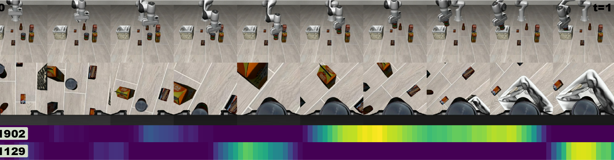
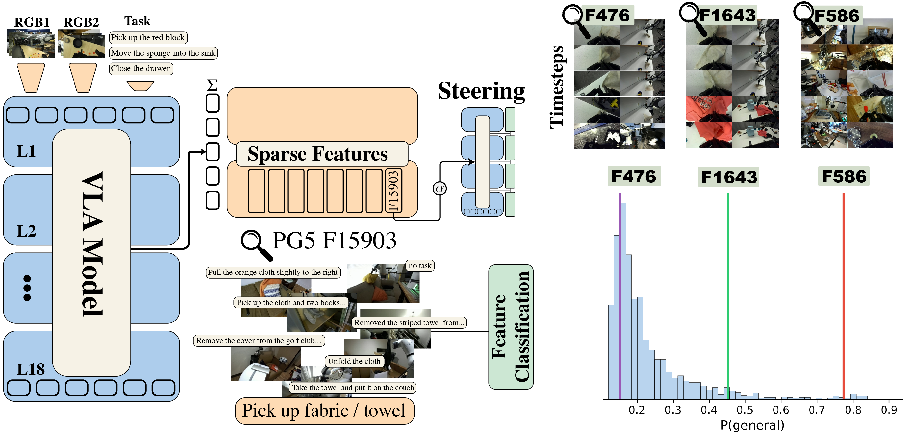

🩺 Dr.VLA
Sparse Autoencoders Reveal Interpretable and Steerable Features in VLA Models
* Equal contribution

Abstract
We train Sparse Autoencoders (SAEs) on VLA model activations to discover interpretable features corresponding to motion primitives, semantics, and episode-specific memorization. We show these features causally influence robot behavior through steering experiments, and that fine-tuning on small datasets amplifies memorization while larger datasets or techniques like knowledge insulation promote general features.
Read full abstract
Vision-Language-Action (VLA) models have emerged as a promising approach for general-purpose robot manipulation. However, their generalization is inconsistent, while these models can perform impressively in some settings, fine-tuned variants often fail on novel objects, scenes and instructions. To ultimately trust VLAs to operate reliably in everyday environments such as homes we need a mechanistic understanding of what they learn and why they fail. Although interpretability has advanced rapidly for vision-language models, these tools and insights have largely not yet been applied to VLA models.
To probe internal representations, we train Sparse Autoencoders (SAEs) on hidden activations from both the language backbone and the action expert. SAEs learn a sparse dictionary whose features act as a compact, interpretable basis for the model's computation. We find that SAEs extract interpretable, general and steerable features corresponding to motion primitives, semantics and episode specific memorization. We categorize features based whether they represent general transferable primitives or episode specific memorization.
We validate these findings through steering experiments on the LIBERO benchmark. We show that individual SAE features causally influence robot behavior. In particular, steering memorization features forces the model to reproduce task-specific action sequences, demonstrating that these features encode trajectory-level memorization rather than abstract task structure. In contrast, steering generalization features induces behaviors consistent with their semantic meaning and applicable across tasks and scenes. Our results provide the first mechanistic evidence that VLAs learn generalizable features across tasks and scenes. These results provide mechanistic evidence that VLAs contain both transferable representations and brittle, dataset-specific memorization. We further show that supervised fine-tuning on small robotics datasets disproportionately amplifies memorization, whereas training on larger, more diverse datasets such as DROID appears to promote more general features. Finally, we release an open-source codebase for activation collection, SAE training, and feature steering in VLA models.
Method Overview
We train Sparse Autoencoders (SAEs) on hidden-layer activations from Pi0.5, a state-of-the-art Vision-Language-Action model. SAEs decompose the model's internal representations into sparse, interpretable features. We analyze features from both the PaliGemma language backbone and the action expert across multiple layers, using the LIBERO and DROID benchmarks.

Figure 1: SAE training and analysis pipeline. We collect activations from Pi0.5's internal layers during rollouts, train sparse autoencoders, and analyze the learned features.
General Features
We identify features that activate broadly across episodes, tasks, and scenes -- indicating they encode general motion primitives rather than memorized trajectories. On the LIBERO benchmark, we find 32 general features (out of 2,044 active) in PaliGemma Layer 5.
Interactive Feature Viewer
Each feature shows the top 10 most activated episodes with the peak timestep from each episode. Click on an episode to view sampled frames and activation heatmap.
Loading...
Feature Steering
We validate that SAE features causally influence robot behavior through activation steering. By adding a scaled feature vector to the model's hidden state, we can shift the robot's behavior in predictable ways.
Loading...
Feature Classification
Distribution of four temporal metrics across all SAE features for each model. Dashed line: mean; dotted line: median. Hover over bars for counts.
We develop a logistic-regression classifier to separate general features from memorized ones based on four temporal metrics: onset count, episode coverage, mean activation magnitude, and relative run length.
| Model | Layer(s) | # Features | # General | # Memorized | % Memorized |
|---|---|---|---|---|---|
| Pi0.5 -- LIBERO | |||||
| PG5 | 2,044 | 32 | 2,012 | 98.43% | |
| PG avg (0, 5, 11, 17) | 7,175 | 184 | 6,991 | 97.43% | |
| Pi0.5 -- DROID | |||||
| PG5 | 2,046 | 81 | 1,965 | 96.04% | |
| PG avg (0, 5, 11, 17) | 6,649 | 647 | 6,002 | 90.27% | |
| OpenVLA -- LIBERO Goal | |||||
| Layer 8 | 1,775 | 9 | 1,766 | 99.49% | |
| LM avg (0, 8, 16, 24, 31) | 9,389 | 48 | 9,341 | 99.49% | |
Training on small datasets (LIBERO, 40 tasks) produces far fewer general features than training on large, diverse datasets (DROID, 1,545 tasks).
Per-Token SAEs
We also train SAEs that operate on individual tokens rather than mean-pooled activations, revealing how features specialize across the visual and language token streams.
Loading...
Interactive Feature Browser
Browse all 2,048 features from PaliGemma Layer 5
Loading feature data...